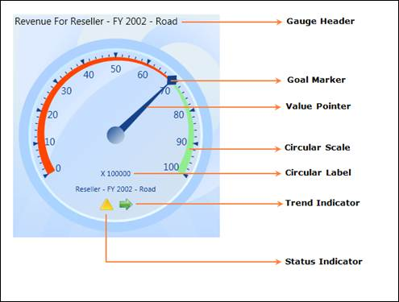

The OLAP Gauge control for WPF comprises the following elements:

Figure 10: OLAP Gauge Elements
The OLAP Gauge control for WPF comprises the following elements.
Scale: Range of numbers bound by a minimum and a maximum.
Frame Type: Specifies the circular built-in frame style.
Pointer: Indicates the KPI value.
Marker: Indicates the KPI Goal.
Range: Indicates critical ranges.
Label: Used to customize the appearance of the gauge by providing related information.
OlapDataManager: Holds the KPI items that are to be rendered as gauge elements.
OlapReport: Holds the definition that specifies the KPI values to be retrieved.
 Note: When the OLAP Gauge is bound to the
OlapDataManager, the above properties are set automatically.
Note: When the OLAP Gauge is bound to the
OlapDataManager, the above properties are set automatically.